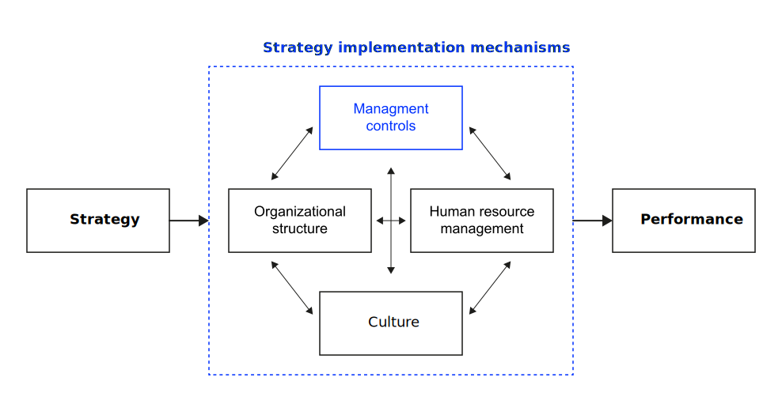
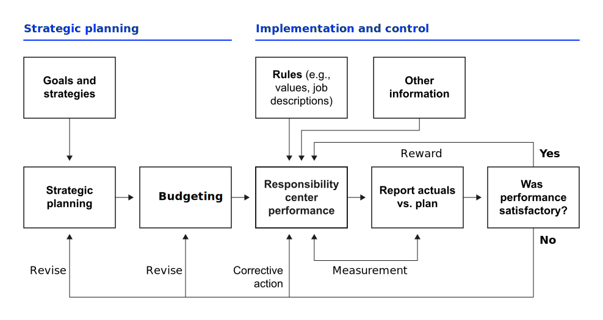

%%{init: {
'theme': 'base',
'themeVariables': { 'fontFamily': 'Arial' },
'flowchart': { 'curve': 'linear' }
}}%%
flowchart TD
A[Total Variance Profit]
A --> B[Other costs]
A --> C[Manufacturing costs]
A --> D[Revenue]
B --> B1[Administration]
B --> B2[Marketing & Sales]
B --> B3[R&D]
C --> C1[Variable costs]
C --> C2[Fixed costs]
C1 --> C1a[Material]
C1 --> C1b[Direct labor]
C1 --> C1c[Variable overhead]
D --> D1[Selling price]
D --> D2[Volume / Mix]
D2 --> D2a[Market share]
D2 --> D2b[Market size]
%% White background and horizontal centering
classDef default fill:#ffffff,stroke:#000,stroke-width:1px,color:#000;
%% Bold root + first level
classDef bold font-weight:bold,stroke-width:2px;
class A,B,C,D bold;
Learning Objectives
After this unit, you should have a solid understanding of
- the relationships between key financial statements and their role in performance measurement;
- financial ratio analysis and time value of money concepts for investment evaluation;
- theoretical foundations explaining why performance management works and fails;
- agency theory, motivation theory, and political perspectives on performance measurement;
- the management control framework linking strategy formulation to task execution;
- different types of responsibility centers and their appropriate performance measures;
- planning and budgeting processes that translate strategy into operational targets;
- variance analysis methodology for systematic performance diagnosis;
- and common performance management frameworks.
Introduction
Prologue
What gets measured gets managed — even when it’s pointless to measure and manage it, and even if it harms the purpose of the organisation to do so. Simon Caulkin, management editor of the Guardian summarizing Ridgway (1956)
The saying “what gets measured gets managed” is often thought to be from Peter Drucker, a management expert. But in fact, Drucker never said it. We know that even in 1956, this “what gets measured gets managed” idea had some major flaws. In his paper “Dysfunctional Consequences of Performance Measurements” Ridgway (1956) already concluded that not everything that matters can be measured and not everything that we can measure matters.
Concepts
Corporate Performance Management (CPM) is an organization-wide approach to steering results across both financial and non-financial dimensions.
It integrates goals, measures, feedback, and learning at individual, team, and enterprise levels to ensure strategy is executed effectively (Presti, 2021):
- Broad system integrating strategy execution, KPI frameworks (e.g., BSC), review meetings, and continuous improvement cycles.
- Includes people/HR processes (goal setting, appraisals, recognition) and cultural enablers that drive sustained performance.
Management control is the subset of CPM concerned with processes by which managers influence other members of the organization to implement the organization’s strategies (Anthony & Govindarajan, 2007):
- Core element within CPM that acts as the bridge between strategy formulation (“what we want to do”) and task control (“how we execute specific tasks”).
- Focuses on measurement, analysis, and corrective action to keep the organization aligned with strategic objectives.
Theoretical foundations
Performance management bridges the strategy–implementation gap by providing systematic measurement, behavioral incentives, and feedback mechanisms that ensure strategic objectives are achieved.
But these levers do not operate in isolation — their design must be grounded in an understanding of how people, systems, and incentives interact in real organizations.
Theories from economics, psychology, and systems thinking help us understand:
- Why performance management is necessary
- How management control systems can be designed
- What factors influence their effectiveness
Agency theory
Agency theory examines the relationship between principals (i.e., shareholders or company owners) and agents (i.e, managers or employees) who act on the principals’ behalf.
The central issue is that principals and agents often have different goals and interests (e.g, maximizing investment returns vs. prioritizing job security).
Agency theory explains how goal conflicts between principals and agents can be managed through performance measurement (monitoring agent’s behavior, costly and imperfect) and incentive design (e.g., stock options and performance bonuses) to align self-interested behaviors with organizational objectives (Eisenhardt, 1989).
Agency theory informs:
- KPI selection: Choosing measurable, outcome-focused indicators (e.g., ROI, sales growth) when outputs are controllable; process KPIs (e.g., quality defect rate) when tasks are complex and harder to measure.
- Incentive design: Aligning bonus schemes or commission structures with strategic priorities.
- Contracting: Structuring SLAs, supplier scorecards, or internal service agreements to balance monitoring costs and performance risk.
The theory essentially helps explain why organizations structure compensation, reporting relationships, and oversight mechanisms the way they do — they’re all attempts to minimize the costs and risks of having someone else act on your behalf.
Motivation theory
Performance management effectiveness depends on achievable, specific goals (expectancy and goal-setting), transparent performance-reward links (instrumentality), valued rewards (valence), and intrinsic motivators. (autonomy, mastery, purpose).
Expectancy theory (Porter & Lawler, 1968; Vroom, 1964) breaks motivation into three linked beliefs:
- Expectancy – If I put in effort, I can perform. Influenced by skills, resources, and clarity of the task.
- Instrumentality – If I perform, I will be rewarded. Strengthened by transparent links between KPIs and rewards.
- Valence – I value the reward. Depends on personal preferences and circumstances.
Performance management should ensure that goals are achievable, the link between performance and reward is explicit, and rewards match what employees value.
Goal-setting theory (Locke & Latham, 1990) states that specific, challenging goals lead to better performance than vague or easy ones. Feedback during the process sustains motivation and enables adjustments to be made, while participation in goal setting can improve commitment.
Performance management should use measurable KPIs with clear targets; combine quantitative feedback (dashboards) with coaching conversations.
Self-determination theory (Deci & Ryan, 1985) highlights intrinsic drivers:
- Autonomy – choice and control over how work is done.
- Mastery – opportunities to develop competence.
- Purpose – connection to meaningful organizational goals.
- Recognition – acknowledgment of contributions.
Performance management should balance extrinsic incentives (bonuses) with intrinsic enablers (job design, recognition programs).
Motivation varies across individuals and cultures. Some respond strongly to monetary incentives, others to recognition or development opportunities. Performance management systems should thus allow customization within a consistent overall framework.
Political and power perspectives
Performance measurement systems are not neutral — they can reinforce or challenge power structures by legitimizing authority, influencing resource allocation, and framing organizational discourse (Burchell et al., 1980; Hopwood, 1976).
Mechanisms of power in performance management:
- Information as power: Those who control measurement definitions, data access, and interpretation can shape decisions and priorities.
- Framing effects: Measures influence what is seen as “important” or “successful” — shifting discourse and perceptions.
- Resource leverage: Performance results are often tied to budget allocations, promotions, and strategic project approval.
- Political behavior: Managers may lobby for favorable metrics, resist changes that reduce influence, or selectively report results.
- Positive potential: PM systems can also be used to empower marginalized voices and surface neglected priorities.
Political and power perspectives should inform:
- Budgeting processes: Anticipating that resource requests will be shaped by internal influence, not just ROI.
- KPI governance: Recognizing that metric definitions may be contested and reflect political compromises.
- Portfolio steering: Designing transparent criteria for project selection to reduce hidden agendas and favoritism.
Performance measurement dysfunctions
Common dysfunctions that can undermine performance management effectiveness:
- Tunnel vision: Overemphasis on measured areas at expense of unmeasured aspects
- Gaming: Manipulating measures rather than improving underlying performance
- Short-termism: Focus on immediate results at expense of long-term value creation
- Suboptimization: Local optimization that undermines overall organizational performance
- Rigidity: Inability to adapt measures as circumstances change
Prevention mechanisms:
- Tunnel vision: broader measure set; review.
- Gaming: audits, qualitative checks.
- Short-termism: include long-term capability KPIs.
- Suboptimization: cross-functional/system KPIs.
- Rigidity: periodic KPI governance.
Summary
We’ve explored why performance management systems are necessary (agency problems, motivation, power dynamics) and what can go wrong (dysfunctions like gaming, tunnel vision, short-termism).
Now we turn to how performance is actually measured and managed in practice.
The foundation of any performance management system is financial literacy — understanding how organizations create, capture, and report value through their financial statements and how these built the foundation of management controls and performance frameworks.
Financial reports
Before we design performance management systems, we must speak the language they rely on: accounting and finance.
Overview
Companies report performance through three primary financial statements: Profit & Loss Statement, Balance Sheet, and Cash Flow Statement.
Understanding these reports is essential for performance measurement as they provide the raw data for most financial performance indicators used in management control systems.
Profit & Loss (P&L) Statement
The P&L or Income Statement shows revenues and expenses over a specified period (year, quarter)
- “Bottom line” contains profit or loss for the period
- Structure: Revenue - Costs = EBITDA - Depreciation = EBIT - Interest = EBT - Taxes = Net Income
- Can be organized by expense type or multi-step format differentiating direct/indirect expenses
Simple structure by expense type
| Item |
|---|
| Revenue |
| - Material costs |
| - Salaries & wages |
| - Rent |
| - Other expenses |
| = EBITDA (Earnings Before Interest, Taxes, Depreciation, and Amortization) |
| - Depreciation & Amortization |
| = EBIT (Earnings Before Interest and Taxes) |
| - Interest |
| = EBT (Earnings Before Taxes) |
| - Taxes |
| = Net income |
Multi-step income statement
| Item |
|---|
| Revenue |
| - Cost of Goods Sold (COGS) |
| = Gross Profit |
| Other operating expenses |
| - Selling, General & Administration (SG&A) |
| - Research & Development |
| - Others |
| = Operating Income or Loss |
| + Total other income from continuing operations1 |
| = EBIT from continuing operations |
| + Financial income |
| - Financial expenses |
| = Income before taxes from continuing operations |
| - Taxes |
| = Net Income from continuing operations |
| + Income or loss from discontinued operations |
| = Net income |
Balance Sheet
The Balance Sheet shows financial position in terms of assets and liabilities at a single point in time
- Assets = Liabilities + Equity (fundamental accounting equation)
- Current assets (cash, inventory, receivables) vs. Non-current assets (property, plant, equipment)
- Current liabilities (short-term) vs. Non-current liabilities (long-term debt)
Assets
| Category | Description |
|---|---|
| Non-current (fixed) Assets | Long-term assets, e.g., real estate, machines, patents/licences, and property, plant & equipment |
| Inventories | Finished goods, raw materials |
| Accounts receivable | Invoices to customers not yet paid |
| Cash & cash equivalents | Cash, balances of current bank accounts, sovereign bonds |
Current assets include inventories, accounts receivable, and cash & cash equivalents.
Liabilities & Equity
| Category | Description |
|---|---|
| Equity | Money paid in by shareholders plus retained profits minus accumulated losses |
| Non-current liabilities | Long-term obligations, e.g., bonds, long-term bank loans |
| Current liabilities | Short-term obligations, e.g., open invoices from suppliers, bank overdraft |
Equity is the delta between the sum of all assets and the sum of all debt.
Debt includes both non-current and current liabilities.
Cash Flow Statement
The Cash Flow Statement shows changes in cash and cash equivalents over a specified period
- Three categories: operating activities, investing activities, financing activities
- Can be derived directly or indirectly from P&L and Balance Sheet changes
- Critical for understanding actual cash generation vs. accounting profits
Components of a Cash Flow Statement
Cash from operating activities
Mainly revenues and cash flows due to expenditures (OPEX):
- Cash outflow for salaries, materials, rent, etc.
Shows in P&L as expenses (timing may differ) - Cash inflow from revenues
Shows in P&L as revenue (timing may differ)
Cash from investing activities
Mainly capital expenditures (CAPEX):
- Cash outflow for investments in non-current assets
Not in P&L; affects Balance Sheet - Cash inflow when non-current assets are sold
Non-current assets hit P&L only via depreciation
Cash from financing activities
Any cash flow due to financing:
- Cash outflow for interest
Expense in P&L - Cash outflow for loan repayment
Not in P&L; Balance Sheet only - Cash inflow from new loans
Balance Sheet only - Cash inflow from financial investments
Can be in P&L (non-operating income)
Cash flows either show up in the P&L (as revenues or expenses, possibly in different periods)
or appear as changes in the Balance Sheet.
Key financial ratios
Categories
Financial performance analysis relies on systematic ratio analysis:
- Profitability — how much value do we create?
- Liquidity — can we meet near-term obligations?
- Efficiency — how well do we use assets?
- Leverage — how risky is our capital structure?
Overview
| Category | Ratio | Description | Formula | Usage |
|---|---|---|---|---|
| Profitability | Gross Margin | % of revenue left after COGS | (Revenue − COGS) / Revenue | Assess core production profitability |
| EBITDA Margin | % after operating costs excl. D&A | EBITDA / Revenue | Compare core operating profitability | |
| Operating Margin | % after operating expenses | EBIT / Revenue | Evaluate efficiency before financing/tax | |
| Net Margin | % after all expenses | Net Income / Revenue | Measure overall profitability | |
| ROA | Return on assets | Net Income / Total Assets | Asset efficiency in generating profit | |
| ROE | Return on equity | Net Income / Equity | Returns to shareholders | |
| ROCE | Return on capital employed | EBIT / (Total Assets − Current Liabilities) | Return on long-term capital | |
| Liquidity | Current Ratio | Ability to meet short-term liabilities | Current Assets / Current Liabilities (CL) | Short-term solvency |
| Quick Ratio | Liquidity excluding inventory | (CA − Inventory) / CL | Liquidity in urgent cash need | |
| Operating Cash Flow Ratio | Cash flow coverage of CL | Operating Cash Flow / CL | Cash-based liquidity measure | |
| Efficiency | Asset Turnover | Revenue per € of assets | Revenue / Total Assets | Asset utilization |
| Inventory Turnover | Times inventory sold | COGS / Avg Inventory | Stock level optimization | |
| Receivables Turnover | Times receivables collected | Net Credit Sales / Avg A/R | Collection efficiency | |
| Payables Turnover | Times payables settled | COGS / Avg A/P | Payment speed | |
| Leverage | Debt-to-Equity | Debt proportion to equity | Total Debt / Total Equity | Financial leverage |
| Equity Ratio | Assets financed by equity | Equity / Total Assets | Capital structure health | |
| Interest Coverage | EBIT coverage of interest | EBIT / Interest Expense | Debt service capacity | |
| DSCR | Cash available for debt service | Operating CF / Debt Service | Lender risk assessment |
NoteGlossary of common financial abbreviations
- A/R – Accounts Receivable: Money owed to the company by customers (current asset).
- Avg A/R – Average Accounts Receivable: (Opening A/R + Closing A/R) ÷ 2; used in turnover and DSO formulas.
- A/P – Accounts Payable: Money the company owes to suppliers (current liability).
- Avg A/P – Average Accounts Payable: (Opening A/P + Closing A/P) ÷ 2; used in turnover and DPO formulas.
- COGS – Cost of Goods Sold: Direct costs of producing goods sold by the company.
- EBIT – Earnings Before Interest and Taxes: Operating profit after operating expenses but before interest and tax.
- EBITDA – Earnings Before Interest, Taxes, Depreciation, and Amortization: Proxy for operating cash flow, excludes non-cash charges.
- ROA – Return on Assets: Net income relative to total assets.
- ROE – Return on Equity: Net income relative to shareholders’ equity.
- ROCE – Return on Capital Employed: EBIT relative to long-term capital invested.
- DSO – Days Sales Outstanding: Average number of days to collect receivables.
- DIO – Days Inventory Outstanding: Average number of days inventory is held.
- DPO – Days Payable Outstanding: Average number of days to pay suppliers.
- CCC – Cash Conversion Cycle: Net number of days cash is tied up in operations.
Days-based efficiency ratios
| Ratio | Description | Formula | Usage |
|---|---|---|---|
| Days Sales Outstanding (DSO) | Avg. days to collect receivables | (Avg A/R / Net Credit Sales) × 365 | Credit policy effectiveness |
| Days Inventory Outstanding (DIO) | Avg. days inventory is held | (Avg Inventory / COGS) × 365 | Stock management efficiency |
| Days Payable Outstanding (DPO) | Avg. days to pay suppliers | (Avg A/P / COGS) × 365 | Supplier payment terms optimization |
| Cash Conversion Cycle (CCC) | Net days cash tied up in operations | DIO + DSO − DPO | Overall working capital efficiency |
NoteTurnover vs day-based ratios
Turnover ratios (Table 1, Efficiency) express frequency (times per period).
while days-based ratios (Table 2) express duration (average days).
Both describe the same reality from different angles:
- High turnover ↔︎ low days outstanding (efficient operations)
- Low turnover ↔︎ high days outstanding (needs improvement)
Time value of money
Overview
Money has different values at different points in time due to its earning potential — a euro today is worth more than a euro tomorrow because of:
- Opportunity cost: money can be invested and earn a return.
- Risk: future cash flows may be uncertain.
- Inflation: purchasing power decreases over time.
- Preference: people prefer current consumption to future consumption.
Key idea: to compare cash flows at different times, we convert them to a common basis — either all future values or all present values.
Future value (FV)
The formula for calculating the future value (FV) from the present value (PV) is as follows:
\(FV = PV \times (1 + i)^n\)
- \(PV\) = present value
- \(i\) = interest rate per period
- \(n\) = number of periods
Example:
FV of 1,000 € in 3 years given a 5% annual interest rate:
\(FV = 1000 \times (1 + .05)^3 = 1,157.63\)
Present value (PV)
Formula to discount the present value (PV) from a future value (FV) is as follows:
\(PV = \frac{FV}{(1 + i)^n}\)
- \(PV\) = present value
- \(i\) = interest rate per period
- \(n\) = number of periods
Example:
PV of 1,000 received in 3 years given a 5% annual interest rate:
\(PV = \frac{1000}{(1.05)^3} = 863.84\)
Interest rates
There are two different interest rates being used:
- Nominal interest rate: stated annual rate, not accounting for compounding frequency.
- Effective annual rate (EAR): accounts for intra-year compounding.
\(EAR = \left( 1 + \frac{i_{nom}}{m} \right)^m - 1\)
- \(i_{nom}\) = nominal annual interest rate
- \(m\) = number of compounding periods per year
Example:
Nominal rate 12%, monthly compounding (\(m = 12\)):
\(EAR = (1 + 0.12/12)^{12} - 1 \approx 12.68\%\)
Annuities
An annuity is a series of equal payments or receipts occurring at regular intervals.
In financial valuation, the concept is used to calculate the present and future value of cash flows, which is critical for making business decisions.
Future value of an annuity:
What is the future value of a constant annual cash flow have at the end of the period? \(FV_{OA} = PMT \times \frac{(1 + i)^n - 1}{i}\)
Present value of an annuity:
What is the present value today of a future annual cash flow for multiple years? \(PV_{OA} = PMT \times \frac{1 - (1 + i)^{-n}}{i}\)
\(PMT\) = payment per period
Net Present Value (NPV)
Net present value (NPV) is a financial metric used to evaluate the profitability of an investment or project.
Steps:
- Estimate cash inflows and outflows over time.
- Chose a discount rate2 and discount each cash flow to present value.
- Sum present values — if positive, project adds value.
\(NPV = \sum_{t=0}^n \frac{CF_t}{(1 + r)^t}\)
- \(CF_t\) = cash flow in period \(t\)
- \(r\) = discount rate
NPV example
What is the NPV of an investment with cash flows shown below if the Weigthed Average Cost of Capital (WACC) is 10%?
| Year | Cash Flow (€) | Discount Factor (10%) | Present Value (€) |
|---|---|---|---|
| 0 | -10,000 | 1.0000 | -10,000.00 |
| 1 | 3,000 | 0.9091 | 2,727.27 |
| 2 | 4,000 | 0.8264 | 3,305.79 |
| 3 | 5,000 | 0.7513 | 3,756.57 |
| NPV | -210.37 |
Decision: Since NPV < 0, the project would not be accepted at a 10% WACC.
Cost types
Understanding different cost types is essential for designing budgets, conducting variance analysis, and making informed resource allocation decisions within performance management systems.
Types
Direct vs. indirect
- Direct: Materials, direct labor — easily assigned to a cost object.
- Indirect: Factory rent, administrative salaries — need allocation rules.
Direct costs are often controllable by operational managers; indirect cost allocation impacts perceived profitability of products or units.
Fixed vs. variable
- Fixed: Stay the same within a relevant range (e.g., rent, salaried staff).
- Variable: Change with output (e.g., raw materials, piece-rate labor).
- Many costs are semi-variable (e.g., utilities with base fee + usage).
Understanding cost behavior is key for forecasting, flexible budgeting, and interpreting performance against targets.
Standard costing
- Establishes rate and usage standards for inputs.
- Variances (e.g., material price variance, labor efficiency variance) pinpoint performance issues.
Standard costing supports responsibility-center evaluation and cost control.
Activity-based costing (ABC)
Identifies activities, assigns resource costs to activities, and then to cost objects via drivers (e.g., setups, purchase orders).
Improves decision-making on pricing, process improvement, and outsourcing.
NoteExample — activity-based costing in SaaS
- Annual cost of customer support team: €300,000
- Total support tickets per year: 15,000 → cost driver rate = €20/ticket
- Enterprise customers: 500 tickets/year → €10,000 support cost per enterprise client
- SMB customers: 50 tickets/year → €1,000 support cost per SMB client
Insight: Enterprise clients consume far more support resources.
ABC informs pricing tiers, SLAs, or self-service portal investment. It improves customer profitability analysis and aligns service design with strategic goals.
Management control
Definition
Management control is the process by which managers influence other members of the organization to implement the organization’s strategies (Anthony & Govindarajan, 2014).
- It’s the bridge between strategy formulation (“what we want to do”) and task control (“how we execute specific tasks”)
- Focuses on ensuring that organizational resources are obtained and used effectively and efficiently to accomplish the organization’s objectives
Management control x strategy

- Organization structure specifies the roles, reporting relationships, and division of - responsibilities that shape the decision-making within an organization.
- Human resource management is the selection, training, evaluation, promotion, and termination of employees so as to develop the knowledge and skills required to execute organizational strategy.
- Culture refers to a set of common beliefs, attitudes, and norms that explicitly or implicitly guide managerial actions.
Management control framework

Traditional management control approaches often focus on top-down command and control mechanisms, where authority and decision-making are centralized at the top levels of the organization. The emphasis is on planning, setting targets, monitoring performance, and taking corrective actions if necessary. The control mechanisms are typically based on formal rules, procedures, and hierarchical structures.
- Strategy formulation (what to do) → Management control (ensure it happens) → Task control (do tasks right).
- Mechanisms: org structure, HRM, culture, planning/measurement/feedback.
- Process: plan → budget → measure → analyze → act.
Planning and budgeting process
Strategic planning (3–5 years)
- Defines long-term direction, competitive positioning, and required capabilities.
- Produces high-level targets and priorities that cascade into annual plans.
- Sets the frame for capital investments, product/market focus, and talent needs.
Operating budgets (annual)
- Translate strategy into detailed revenue, cost, and profit plans for responsibility centers (departments, business units).
- Broken down by month or quarter to monitor seasonal effects and track progress.
- Include both financial and operational measures.
Typical budget components
- Revenue budget: Sales volumes × unit prices.
- Production budget: Units to be produced, considering opening inventory and sales forecasts.
- Expense budget: Operating costs by category (e.g., labor, materials, overhead).
- Capital budget: Planned investments in assets, technology, or infrastructure.
- Cash flow budget: Expected cash inflows and outflows to ensure liquidity.
Functions of the planning & budgeting process
- Coordination: Aligns activities across functions and units.
- Authorization: Provides spending limits and resource approvals.
- Performance benchmark: Sets measurable targets against which actual results are compared.
- Communication: Signals priorities and expectations throughout the organization.
- Risk planning: Anticipates contingencies and resource needs under different scenarios.
Types of budgeting approaches
- Annual budget: Fixed for the year; common but can become outdated in volatile environments.
- Rolling budget: Updated regularly (e.g., quarterly) to maintain a forward-looking 12–18 month horizon.
- Zero-based budget: Every expense must be justified each period, not just incremental changes.
- Activity-based budget: Links costs to the activities that generate them, improving cost control.
Modern CPM practices
- Rolling forecasts: Replace static annual targets with continuously updated projections based on latest data.
- Driver-based planning: Links forecasts and budgets to key business drivers (e.g., sales pipeline, customer churn rate) for more responsive resource allocation.
- Integration with performance management systems: Ensures that financial targets are consistent with KPI frameworks such as the Balanced Scorecard, reducing siloed planning and gaming behavior.
Responsibility center design
Organizations structure accountability through different responsibility center types:
- Cost centers: engineered vs discretionary; measure vs budget.
- Revenue centers: sales & market share; limited cost control.
- Profit centers: accountable for P&L; enables decentralization.
- Investment centers: ROI/ROCE/EVA; highest autonomy.
- Design principles: align responsibility with controllability; match measures to objectives; support structure & strategy.
The choice of center type determines KPI sets and bonus formulas; e.g., ROI/EVA for investment centers versus margin or contribution for profit centers.
Variance analysis
Variance analysis compares actual results to planned targets to understand the causes of performance deviations and guide corrective action (Anthony & Govindarajan, 2007).
Purpose
- Identify and quantify causal factors behind differences between budgeted and actual results.
- Provide actionable insight, not just variance reporting.
- Support continuous improvement and learning loops in CPM.
Approach (Anthony & Govindarajan, 2007):
- Identify the causal factor affecting profits (e.g., sales price, volume, cost of materials).
- Disaggregate the overall profit variance into these causal factors.
- Measure the profit impact of each factor individually.
- Apply ceteris paribus vary one factor at a time, holding others constant to isolate its effect.
- Layer complexity sequentially start with a simple commonsense breakdown, then refine as needed.
- Stop when complexity outweighs insight focus on factors with real decision value.
Many organizations perform variance analysis monthly at business unit and corporate level; some prefer quarterly for broader trends.
Performance management perspective
Meeting the budget must not equal optimal performance — variances must be interpreted in context (market changes, strategic shifts).
Sophisticated CPM uses variance analysis not only for control but also for learning:
- Adjust forecasts and rolling budgets based on variance patterns.
- Identify systemic issues (e.g., persistent unfavorable cost variances).
- Feed insights into KPI governance to ensure measures remain relevant.
Variance analysis disaggregration
Common variance breakdowns
- Revenue variance
- Volume variance – change due to actual units sold vs. budgeted.
- Mix variance – change due to the proportion of products/services sold.
- Price variance – change due to actual selling prices vs. budgeted.
- Volume variance – change due to actual units sold vs. budgeted.
- Expense variance
- Manufacturing expenses – material cost, labor efficiency, overhead absorption.
- Other expenses – SG&A, marketing, R&D.
- Manufacturing expenses – material cost, labor efficiency, overhead absorption.
Financial performance frameworks
Theories from economics, psychology, and organizational behavior identify the drivers of effective performance management. Frameworks operationalize these insights into practical measurement systems that guide resource allocation, align incentives, and support decision-making. They provide the how — structured approaches to measuring, analyzing, and improving performance.
Overview
Du Pont Pyramid, Tableau du Bord, Balanced Scorecard, Performance Pyramid, and Performance Prism.
- The Du Pont Pyramid focuses on analyzing return on investment (ROI) by breaking it down into key financial ratios. It examines profitability through the relationships between net income, sales, and asset turnover. The framework is useful for understanding the drivers of financial performance.
- A Tableau du Bord (a French term for “dashboard”) provides a comprehensive approach to performance measurement. It encompasses both financial and non-financial metrics, presenting a holistic view of organizational performance. This framework is particularly useful for monitoring and managing various aspects of performance in a visually intuitive manner.
- The Balanced Scorecard is a strategic performance measurement framework that takes a balanced approach by considering multiple perspectives. It includes financial metrics along with customer satisfaction, internal processes, and learning and growth. This framework is valuable for aligning organizational activities with the overall strategy and ensuring a balanced assessment of performance.
- The Performance Pyramid offers a hierarchical representation of performance metrics, starting from financial indicators at the top and extending to operational metrics at the base. This framework organizes metrics into different levels based on their strategic relevance and impact. It provides a structured approach to performance measurement with a clear linkage to strategic goals.
- The Performance Prism is a holistic framework that goes beyond traditional measures by considering stakeholders and their interests. It incorporates key elements such as stakeholders, strategies, processes, capabilities, and stakeholder satisfaction. This framework is valuable for providing a broader perspective on performance and assessing the impact on various stakeholders.
Each framework offers a unique perspective on performance measurement. A combination of these frameworks may provide a more comprehensive understanding of performance.
Framework evolution
As organizations mature, control systems evolve from financial-only to integrated, adaptive systems.
Stages:
- Financial control focus (DuPont)
- Balanced approaches (BSC)
- Value-based management (EVA)
- Stakeholder integration (Performance Prism, Integrated Reporting)
- Dynamic, AI-enabled, real-time controls
Choose frameworks appropriate to current maturity and adaptability needs.
Key takeaways
- Financial statement literacy underpins all performance measurement
- Ratios answer four questions: value, liquidity, efficiency, risk
- TVM & investment appraisal connect performance to value creation
- Theory explains why measures work (or fail)
- Dysfunction prevention & politics-awareness make systems robust
- Control frameworks connect strategy to operations
- Responsibility centers, budgeting, and variance are core CPM tools
Review and consolidation
The following questions are designed to review and consolidate what you have learned and are a good starting point for preparing for the exam.
- Analyze how agency theory explains the need for performance measurement systems. Describe how motivation theory informs performance system design.
- Identify and explain two major performance measurement dysfunctions. Propose prevention strategies for each dysfunction.
- Explain how performance measurement systems create power dynamics in organizations. Analyze both positive and negative political uses of measurement.
- Explain how the three primary financial statements interrelate and support performance measurement. Calculate and interpret key financial ratios for a given company.
- Apply NPV to evaluate investment proposals. Explain the components of WACC and their impact on investment decisions.
- Differentiate between direct/indirect and fixed/variable costs. Explain how cost behavior affects responsibility center performance measurement.
- Differentiate between strategy formulation, management control, and task control. Explain how management control bridges strategy and operations.
- Design appropriate responsibility centers for different organizational contexts. Explain the controllability principle and its implications.
- Describe the planning and budgeting process and its role in strategy implementation. Compare annual versus rolling budget approaches.
- Conduct comprehensive variance analysis for a business unit, decomposing total variance into price, volume, mix, and cost components.
- Compare and contrast DuPont analysis, EVA, and Balanced Scorecard for different organizational scenarios. Recommend which framework(s) would be most appropriate and why.
- Analyze how performance measurement systems should evolve as organizations mature and environments change. Provide specific examples of adaptive changes.
Literature
Anthony, R. N., & Govindarajan, V. (2007). Management control systems (12th ed.). McGraw-Hill.
Anthony, R. N., & Govindarajan, V. (2014). Management control systems. McGraw-Hill Education.
Burchell, S., Clubb, C., Hopwood, A. G., Hughes, J., & Nahapiet, J. (1980). The roles of accounting in organizations and society. Accounting, Organizations and Society, 5(1), 5–27. https://doi.org/10.1016/0361-3682(80)90017-3
Deci, E. L., & Ryan, R. M. (1985). Intrinsic motivation and self-determination in human behavior. Springer Science+Business Media. https://doi.org/10.1007/978-1-4899-2271-7
Eisenhardt, K. M. (1989). Agency theory: An assessment and review. Academy of Management Review, 14(1), 57–74. https://doi.org/10.5465/amr.1989.4279003
Hopwood, A. G. (1976). Accounting and human behaviour. In Accounting and human behaviour. Haymarket Publishing.
Locke, E. A., & Latham, G. P. (1990). A theory of goal setting and task performance. Prentice Hall.
Porter, L. W., & Lawler, E. E. (1968). Managerial attitudes and performance. R. D. Irwin.
Presti, C. (2021). Performance management as a part of the management control system. In Integrating performance and risk in a management control system (pp. 43–63). Springer. https://doi.org/10.1007/978-3-030-87082-9_3
Ridgway, V. F. (1956). Dysfunctional consequences of performance measurements. Administrative Science Quarterly, 1(2), 240–247.
Vroom, V. H. (1964). Work and motivation. Wiley.
Footnotes
Earnings that are not part of the company’s main operating activities, but still come from business lines the company is keeping (e.g., rental income)↩︎
The discount rate is the rate of return you could earn on an alternative investment with a similar level of risk. It’s used to “discount” future cash flows back to their present-day value. A common discount rate is a company’s weighted average cost of capital (WACC).↩︎